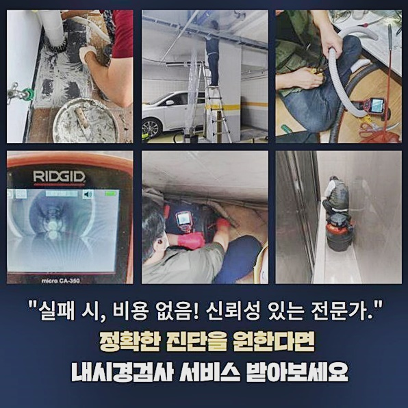
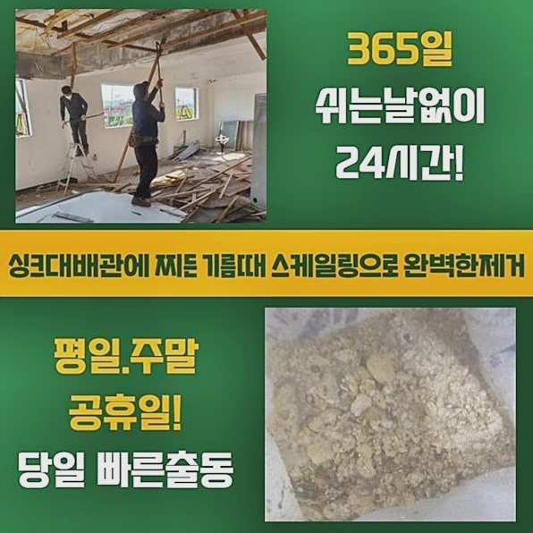
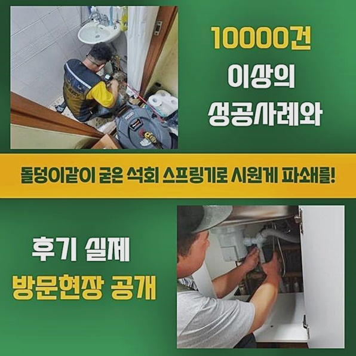
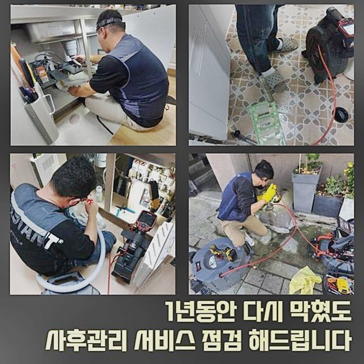
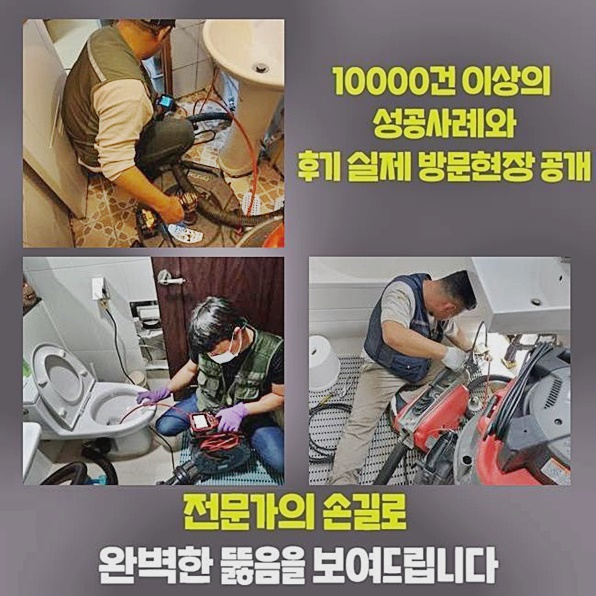
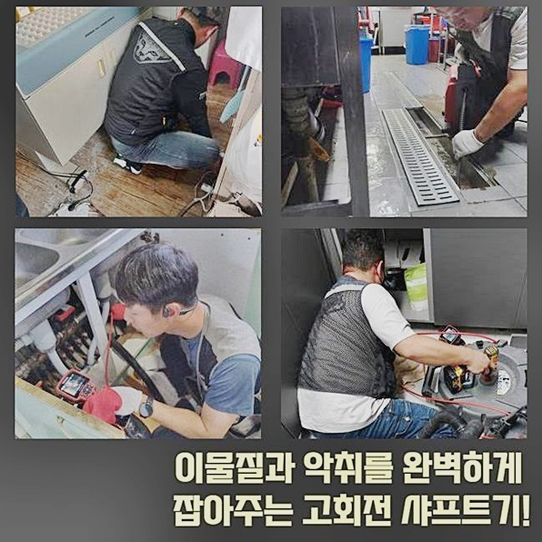
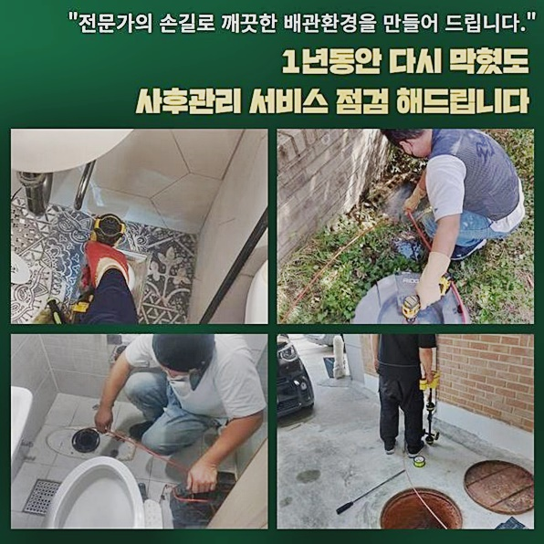

🏠 도봉 쌍문동하수도뚫음 도봉동 맨홀역류 해결방법
용인시 처인구 배관막힘 전문 시공 후기

📋 작업 개요
- 위치: 용인시 처인구, 수원시 영통구, 화성시 동탄
- 서비스 유형: 배관막힘, 고압세척, 내시경점검
- 작업 일시:
- 업체명: 하수구수사대 (010-5615-2118)
🔍 문제 상황
도봉 쌍문동하수도뚫음 도봉동 맨홀역류 해결방법
지하실 등에 천장부분에 자리하고 있는 배수관을 종종 보셨을텐데요
평소에는 지나치시는 경우들이 대부분입니다
이것은 횡주관으로도 불리우고 있죠
이 하수관이 막힌다면 전체에 걸쳐 좋지 못한 영향들을 끼치죠
최근 주차공간의 메인관로가 막히게되며 솟구치는 생겨 도움을 청해주셨습니다
메인관들이 막히면 여러가지의 하수도에 악영향들을 미치고 더 나아가 2차적인 증세가 나타납니다
1층에서 하수가 배출되지 못하는 문제들을 보인다 하셨습니다
해당 증상을 해결하기 위하여 검수를 수행해보았어요
내시경장치로 내부상황을 확인합니다
눈으로 관찰해봄직한 정보들은 한계들이 존재해 내시경장치를 깊이 투입시켜 샅샅이 확인했는데요
내시경장치로 확인하니 머리카락뭉치와 기름성분 등의 잔해하수들이 하수도를 가득 메웠어요
먼저 배수복구를 위하여 샤프트장비를 가용시켰어요
샤프트도구를 사용해서 쌓인 잔해를 제거시킵니다

🔎 원인 분석
💡 전문가 진단: 정밀 진단 장비를 사용하여 슬러지의 고착 여부를 판명하고 타격/세척 작업을 실시했습니다.
다음 과정으로 메인관으로 존재하는 하수관로를 체크해봐야해요
천정부에 하수관의 청소를 수행해보았어요
아래층쪽에 다중화로 막히는 현상이 나타난것으로서 평시에 이런 문제들이 나타났다면 집수시설이나 공용관일 수 있죠
메인배수관은 높이 위치하기에 리프트카와 같은 장비를 운용하여 시공하는 것이 중요합니다
공용배수관의 이러한 상황을 들여다보려면 알맞는 부위에 타공작업이 불가피합니다
고객분에게 충분하게 설명들을 해드리며 동의해주시어 문제부위에 홀을 내주었죠
구멍을 뚫고서 역시나 내시경을 삽입해주고 화면을 통해 보여지는 상황들을 봤는데요
내시경기기는 바깥에서 파악하기 쉽지 않은 하수관을 세심하게 살피는게 가능하기에 작업 시에 절대적으로 사용되는데요
내시경장비로 공용관들을 관찰하였더니 내부에는 고착된 잔해가 축적되어 막히게 되었습니다
단단해진 잔해가 연결부마다 축적되어 배수를 방해함과 동시에 막아버린 형상이였어요
잔해하수가 대량으로 있던 모습이였고 길게 늘어진 하수관 내측에 자리잡고 있었기에 고압수청소로 수리들이 행해져야하는 상황으로 판단했습니다
슬러지들이 태산같아 당연하게도 아래에 존재하는 세대엔 오수들이 흘러가지 않아 역류되는 나타나게 된것입니다
막혀버린 사안은 신속히 배수 시점에 증상들이 생겨나나 급작스럽게 찾아오는 사례도 목격됩니다
먼저 문제들이 좋지 못하면 전문진들과 해결해야하고 최고의 방식은 주기성을 가지고 검수해 미래에 문제들이 발생치않게 하는겁니다
증세를 해소하고자서 관로에 이물제거를 수행해보았어요

🔧 작업 과정
고수압식 세척을 이행해줄것을 말씀드리고서 수리를 수행해보았어요
예상외로 어마어마한 오염원들이 하수도를 채운탓에 꼼꼼히 시공을 진행해야 했었습니다
당연히 공동배수관을 통해서 연결된 라인에서 쓰고서 배출되는 하수들이 통과하기에 증상이 야기될 수 밖에 없죠
갑작스레 문제들이 발생하는 것을 막기위해선 메인관도 주기성을 가지고 진단함이 좋죠
타공했던 자리에 노즐을 삽입하여 고착물들을 빠르게 제거해주는데요
고압수세척 방법은 노즐에서부터 청수들을 분출시켜 공용배수관의 잔해를 청소해줍니다
기름으로 문제되는 관로문제들을 복구시키는데에 큰 역할을 합니다
벽측에 흡착된 잔해물질을 세척해주는 까닭에 이전의 상태로 복구해드리고 있어요
하수도 내부쪽에 가득찼었던 이물이 벽측에서 제거되면서 수도와 빠져나갔어요
오염원의 경우 비닐쪽을 빠져나와 모입니다
이로 인해 비닐들을 써서 보양진행을 수행하는겁니다
보양들을 안했을 시 추후에라도 오염물이 바닥으로 튀게되면서 문제들이 또 생겨났을건데요
또한 기름들로 인하여 자리잡은 이물이 많았었어요
슬러지이물은 제거시키는것이 어려우므로 안전히 대응해야하죠
배수관에 기름 오염물이 대량으로 자리하면 하수구 막힘 문제들이 야기되고 위생관련 사안에서도 좋지 못한 영향들이 생겨나고 냄새까지 나죠
오염물이 여러방향으로 튄다면 작업하기가 어렵겠습니다
높은 수압의 세척들을 이어가니 흘러나오는 오수들이 깨끗해지고 있었죠
물들이 잘 빠지는건 이야기로 말씀드리면 공용배수관의 잔해물이 청소되고있다는 의미입니다
꾸준한 높은 수압의 세척들을 통해서 증상의 까닭을 깔끔히 제거했습니다
청소 시점에도 내시경 카메라를 이용해 메인관의 잔해물이 제대로 없어졌는지 관찰해주는데요
내시경장치를 통해 확인하였더니 큼지막한 이물은 없어졌고 벽측에 자리잡은 잔해오수가 남아있는 상황이었습니다
이런 흡착물을 청소해야 이물제거가 진행되었다고 볼 수 있겠습니다
그 연유들을 신속하게 제거한 뒤 다음으로 샤프트를 꺼내 벽부분에서 빠지지못했던 고착물들을 타격하여 빈틈없이 제거했습니다


✅ 작업 완료
막힘의 까닭을 완화시키고 내시경도구로 검수를 진행해보았어요
고객분이랑 같이 공용배수관의도 살폈어요
배수관에는 문제될만한 잔해물도 없는채로 빈틈없이 작업된 내측을 확인했습니다
이제 저층부분에서 물들을 써도 문제없이 원활히 빠져나가요
관로에 복합적인 증세들이 자리잡은다면 1차적으로 메인 배관과 집수시설의 상황을 체크해봐야해요
때때로 진단들을 수행하여 증세가 생겨나는 일 없게 저희의 전문가들과 전문적으로 하수도를 관리하시기를 바라요!




⚠️ 하수구 배관 막힘 예방 및 관리 가이드
- ✅ 머리카락, 비닐, 물티슈 등 물에 분해되지 않는 이물질은 절대 흘려보내지 마세요.
- ✅ 기름기 많은 식기는 설거지 전 키친타올로 먼저 기름때를 닦아내세요.
- ✅ 주기적으로 배수구에 뜨거운 물을 가득 부어주어 유지방 고착을 방지하세요.
- ✅ 작업 후 1년 이내 재발 시 무상 A/S 보증 서비스를 제공합니다.
💡 핵심 정리
- 확실한 장비 작업(내시경 점검 및 샤프트 스케일링)으로 원인을 뿌리 뽑습니다.
- 작업 후 1년 이내에 동일한 부위 재발 시 100% 무상 A/S 서비스를 보장합니다.
- 서울 · 경기 · 인천 전 지역에 24시간 언제든 긴급 출동할 수 있도록 항시 대기 중입니다.
❓ 자주 묻는 질문 (FAQ)
🚨 용인시 처인구 배관막힘 문제로 고민이신가요?
정확한 원인 진단과 확실한 시공으로 재발 없는 해결을 약속드립니다.
24시간 긴급 출동 | 서울 · 경기 · 인천 전지역 | 1년 내 재발 시 무상 A/S